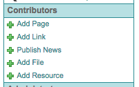
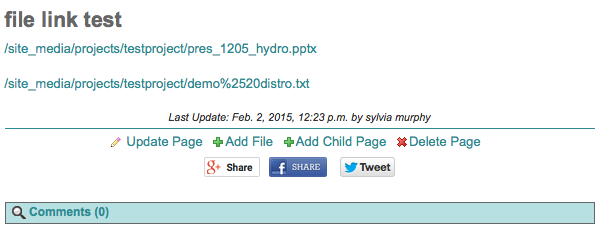
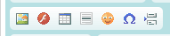
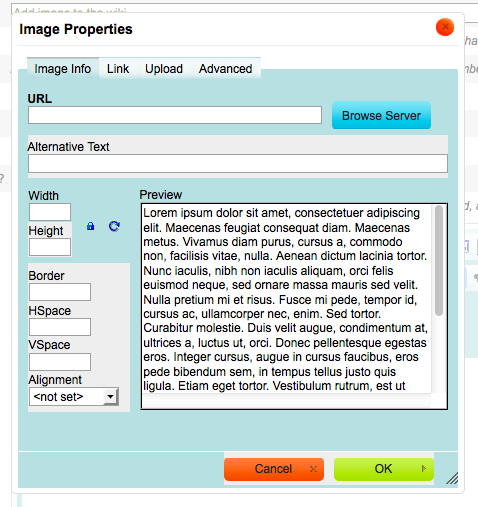
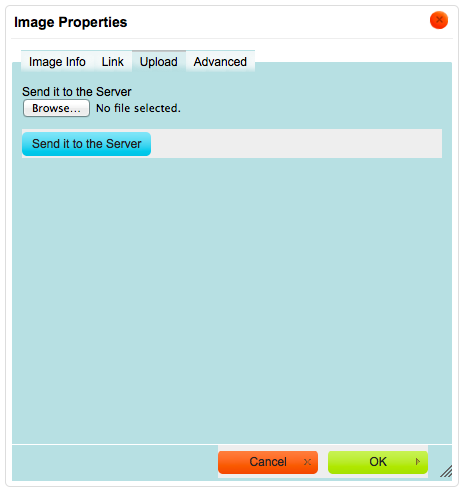
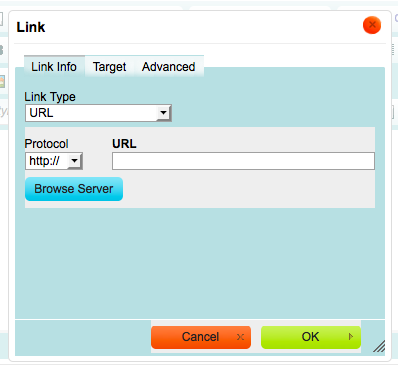
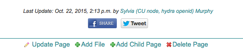

Wiki Editing¶
How to use the built-in wiki system¶
- Freeform content in CoG is created using a built-in wiki.
- You must be logged in to edit wiki pages
- You must be a Contributor or Admin to edit wiki pages.
- The wiki can be edited via a WYSIWYG GUI or via HTML (by choosing the “Source” button in the wiki editor).
WARNING: Copying text from a browser window (e.g. an email, a google document, another web page), will copy the hidden styles as well. These styles will interfer with the styling of your conent.
- Choose to either create a new page or edit an old one.
New pages are added via the “Add Page” link in the left navigation bar under the “Contributors” heading.
To edit an existing page, click the “Update Page” link located at the bottom of every page .

- Fill in the wiki form
There are three wiki templates that are selected via the “Template” pull down menu (Figure 3).
- all three columns (left navigation bar, wiki content, right column services)
- wiki and right column services
- wiki only
- Adding Images
- To insert an image into the wiki, it must first be uploaded to the server.
- Images can be formatted when uploaded or after the fact.
- Read tutorial on Add a new image to a wiki page.
- Using Labels and Topics (for left navigation bar)
- The label and topic fields are used to create the auto-generated left navigation bar:
- The label is what will show up as text on the left navigation bar.
- The topic is the label divider on the left navigation bar. You can choose from an existing topic or create a new one.
- Only parent pages will show up on the left. Child pages can be found listed at the bottom of their parent wiki page.
- Wiki Page Visibility
- Pages can be made “Not Viewable” by clicking on the appropriate checkbox on the form.
- Pages that are “Not Viewable” will have a lock icon next to them in the navigation bar but will visible to project members when logged in.
- Wiki Page Editability
- Pages can be made “Not Editable” by clicking on the appropriate checkbox on the form.
- Pages that are “Not Editable” can only be edited by Project Administrators.
Add a new image to a wiki page¶
Images can be added to the wiki two ways
- Direct upload (see this section)
- Link to file previously uploaded (see tutorial next section)
TIFFs are not allowed
Images can be formatted once in the wiki
Open a wiki page in edit mode
Click on the “image icon” in the wiki WYSIWYG editor
Click on the “Upload” tab in the Image Properties box
Click on the “Browse…” button when the “Upload” tab is active
Select the file from the file system.
- The look and feel of the file browsing interface varies by OS
- TIFFs are not allowed
- Click on “Send it to the Server” (Figure 4)
The Image Properties box will appear after the file has been selected
The Image Properties box will activate to the “Image Properties” tab
Fill in any formatting options:
- Width and Height control the size of the image
- The image can also be resized with the mouse
- Border as a line around the image
- HSpace adds horizontal space around the image
- VSpace adds vertical space around the image
Click ok
Right click the image and select “Image Properties” to edit again
Add a pre-existing image to a wiki page¶
Images can be added to the wiki two ways
- Direct upload (see previous section tutorial)
- Link to file previously uploaded (see this section)
Images can be formatted once in the wiki
Open a wiki page in edit mode
Click on the “image icon” in the wiki WYSIWYG editor
Click on the “Browse Server” button (Figure 3) in the Image Properties box
- This invokes CoG’s File Browser
Click on your project
- This invokes a listing of files associated with that project
Select the image of choice

Format the image accordingly
- Width and Height control the size of the image
- The image can also be resized with the mouse
- Border as a line around the image
- HSpace adds horizontal space around the image
- VSpace adds vertical space around the image
- Right click the image and select “Image Properties” to edit again
Add an HTML link (to a Project File) to a wiki page¶
Open a wiki page in edit mode
Click on the link icon in the wiki WYSIWYG editor

This opens up the Link Browser.
Click on “Browser Server” in the Link Browser.
This opens up the first page of the FileBrowser, which lists individual project folders.
Click on Click on your project.
This opens up the second page of the FileBrowser listing all of the files on the server.
Click the blue “Select” button next to the file you wish to link to
This creates a link in your wiki page.
Maximize the wiki window while editing¶
- The built-in wiki editing area is small be default
- This area can be expanded
Open a wiki page in edit mode
Click on the “maximize icon” to make the window larger
Click the “maximize icon” again to return to previous screen.
Make a wiki page private¶
See How to use the built-in wiki system section.
Share a wiki page with Facebook or Twitter¶
CoG has implemented hooks for sharing wiki pages with Facebook and Twitter.
You must already have accounts with these services.
Social networking Icons are located at the bottom of every wiki page.
